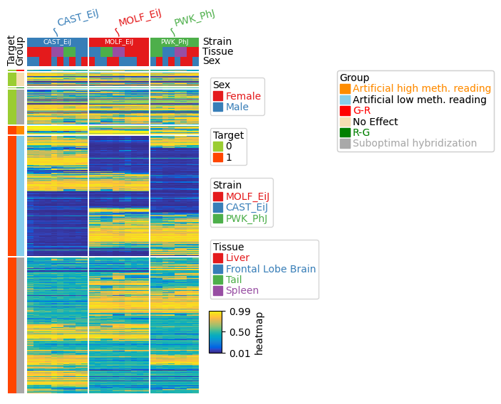
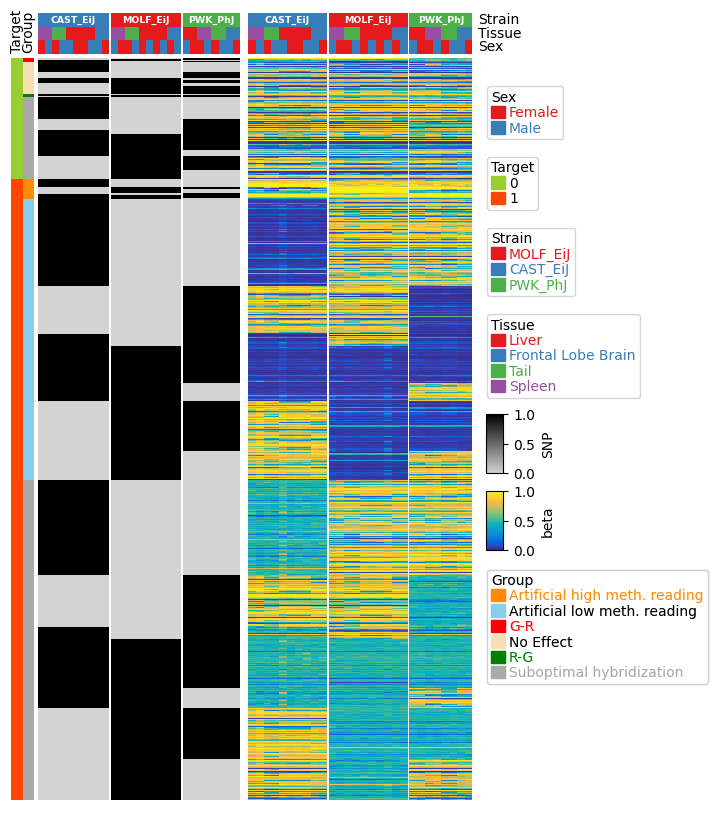

Composite two heatmaps horizontally for mouse DNA methylation array dataset¶
The dataset used in the following example was obtained from PMID: 36617464
[1]:
import os,sys
%matplotlib inline
import matplotlib.pylab as plt
from matplotlib.colors import LinearSegmentedColormap
import pickle
plt.rcParams['figure.dpi'] = 100
plt.rcParams['savefig.dpi']=300
# sys.path.append(os.path.expanduser("~/Projects/Github/PyComplexHeatmap/"))
import PyComplexHeatmap
from PyComplexHeatmap import *
[2]:
import pickle
import urllib
f=open("../data/influence_of_snp_on_beta.pickle",'rb')
data=pickle.load(f)
f.close()
beta,snp,df_row,df_col,col_colors_dict,row_colors_dict=data
[3]:
# beta is DNA methylation beta values matrix, df_row and df_col are row and columns annotation respectively, col_colors_dict and row_colors_dict are color for annotation
print(beta.iloc[:,list(range(5))].head(5))
print(df_row.head(5))
print(df_col.head(5))
beta=beta.sample(2000)
snp=snp.loc[beta.index.tolist()]
df_row=df_row.loc[beta.index.tolist()]
204875570030_R01C02 204875570030_R04C01 \
cg30848532_TC21 0.525089 0.419515
cg30147375_BC21 0.803776 0.585928
cg46239718_BC21 0.443958 0.517514
cg36100119_BC21 0.351977 0.528846
cg42738582_BC21 0.783958 0.724901
204875570030_R05C01 204875570030_R06C01 204875570035_R05C02
cg30848532_TC21 0.483276 0.460750 0.390317
cg30147375_BC21 0.510269 0.831463 0.550146
cg46239718_BC21 0.535909 0.450167 0.564107
cg36100119_BC21 0.524896 0.374422 0.551200
cg42738582_BC21 0.802178 0.848621 0.850481
chr Target CpG ExtensionBase ProbeDesign CON mapFlag \
cg30848532_TC21 chr12 1 1 0 II C 16
cg30147375_BC21 chr11 0 0 0 II C 0
cg46239718_BC21 chr8 1 1 0 II C 0
cg36100119_BC21 chr19 1 1 0 II C 16
cg42738582_BC21 chr5 0 0 0 II C 16
Group \
cg30848532_TC21 Suboptimal hybridization
cg30147375_BC21 No Effect
cg46239718_BC21 Artificial low meth. reading
cg36100119_BC21 Suboptimal hybridization
cg42738582_BC21 Suboptimal hybridization
Type
cg30848532_TC21 1-1-0-CG-GG-II-C-16-GA-chr12-79760438
cg30147375_BC21 0-0-0-ca-ac-II-C-0-AG-chr11-109557651
cg46239718_BC21 1-1-0-cg-gt-II-C-0-GA-chr8-117860829
cg36100119_BC21 1-1-0-CG-GG-II-C-16-GA-chr19-5877949
cg42738582_BC21 0-0-0-AA-AA-II-C-16-AG-chr5-122031379
Strain Tissue Sex
204875570030_R01C02 MOLF_EiJ Frontal Lobe Brain Female
204875570030_R04C01 CAST_EiJ Frontal Lobe Brain Male
204875570030_R05C01 CAST_EiJ Frontal Lobe Brain Female
204875570030_R06C01 MOLF_EiJ Frontal Lobe Brain Male
204875570035_R05C02 CAST_EiJ Liver Male
[4]:
row_ha = HeatmapAnnotation(Target=anno_simple(df_row.Target,colors=row_colors_dict['Target'],rasterized=True),
Group=anno_simple(df_row.Group,colors=row_colors_dict['Group'],rasterized=True),
axis=0)
col_ha= HeatmapAnnotation(label=anno_label(df_col.Strain,merge=True,rotation=15),
Strain=anno_simple(df_col.Strain,add_text=True),
Tissue=df_col.Tissue,Sex=df_col.Sex,
axis=1)
plt.figure(figsize=(3.5, 6))
cm = ClusterMapPlotter(data=beta, top_annotation=col_ha, left_annotation=row_ha,
show_rownames=False,show_colnames=False,
row_dendrogram=False,col_dendrogram=False,
row_split=df_row.loc[:, ['Target', 'Group']],
col_split=df_col['Strain'],cmap='parula',
rasterized=True,row_split_gap=1,legend=True,legend_anchor='ax_heatmap',legend_vpad=5)
# ann=col_ha.annotations[1]
# ann.ax.yaxis.label.set_visible(False)
#plt.savefig("clustermap.pdf", bbox_inches='tight')
plt.show()
Starting plotting..
Starting calculating row orders..
Reordering rows..
Starting calculating col orders..
Reordering cols..
Plotting matrix..
Starting plotting HeatmapAnnotations
Starting plotting HeatmapAnnotations
Collecting legends..
Collecting annotation legends..
Collecting annotation legends..
Plotting legends..
Incresing ncol
Incresing ncol
More than 3 cols is not supported
Legend too long, generating a new column..

[5]:
row_ha = HeatmapAnnotation(Target=anno_simple(df_row.Target, colors=row_colors_dict['Target'], rasterized=True),
Group=anno_simple(df_row.Group, colors=row_colors_dict['Group'], rasterized=True),
axis=0)
col_ha1 = HeatmapAnnotation(#label=anno_label(df_col.Strain, merge=True, rotation=15),,
Strain=anno_simple(df_col.Strain, add_text=True,
text_kws={'fontweight':'bold'}),
Tissue=df_col.Tissue, Sex=df_col.Sex,
axis=1,verbose=0) # df=df_col.loc[:,['Strain','Tissue','Sex']],
cm1 = ClusterMapPlotter(data=beta, top_annotation=col_ha1, left_annotation=None,
show_rownames=False, show_colnames=False,
row_dendrogram=False, col_dendrogram=False,
row_split=df_row.loc[:, ['Target', 'Group']],
col_split=df_col['Strain'], cmap='parula', #turbo, parula, viridis,
rasterized=True, row_split_gap=0.1,vmax=1,vmin=0,center=0.5,
plot=False,label='beta')
col_ha2 = HeatmapAnnotation(#label=anno_label(df_col.Strain, merge=True, rotation=15),,
Strain=anno_simple(df_col.Strain, add_text=True,
text_kws={'fontweight':'bold'}),
Tissue=df_col.Tissue, Sex=df_col.Sex,
label_kws={'visible':False},axis=1,verbose=0)
my_cmap = LinearSegmentedColormap.from_list('my_cmap', [(0, 'lightgray'), (1, 'black')])
cm2 = ClusterMapPlotter(data=snp, top_annotation=col_ha2, left_annotation=row_ha,
show_rownames=False, show_colnames=False,
row_dendrogram=False, col_dendrogram=False,
col_cluster_method='ward',row_cluster_method='ward',
col_cluster_metric='jaccard',row_cluster_metric='jaccard',
row_split=df_row.loc[:, ['Target', 'Group']],
col_split=df_col['Strain'],
rasterized=True, row_split_gap=0.1,
plot=False,cmap=my_cmap,label='SNP') # or cmap='gray' or Greys,
cmlist=[cm2,cm1]
[6]:
plt.figure(figsize=(6,9))
composite(cmlist=cmlist, main=0,legend_hpad=2,col_gap=0.1)
plt.savefig("beta_snp.pdf", bbox_inches='tight')
plt.show()
Starting plotting..
Starting calculating row orders..
Reordering rows..
Starting calculating col orders..
Reordering cols..
Plotting matrix..
Starting plotting HeatmapAnnotations
Collecting legends..
Collecting annotation legends..
Starting plotting..
Plotting matrix..
Collecting legends..

[ ]: